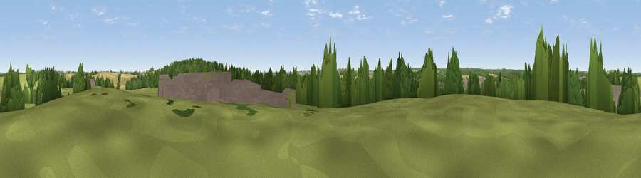

Viewpoint near Bilsthorpe
#32298 in England · top 52% of its area beats it · near BilsthorpeWhere it is
The exact computed spot (SK 65325 61025). Click the marker for map links.
The view, rendered

A 360° render of this exact spot computed from the terrain model, tree cover and land cover — summer colours, afternoon light, calibrated against photographs of famous viewpoints. Real trees, hedges and buildings will differ in detail.
The panorama
Grey silhouette: terrain skyline in each direction (720 bearings, Earth curvature and refraction included). Dashed green: skyline with trees (+15 m) and buildings (+8 m) as obstacles. Blue strip: how far the ground is visible on each bearing.
Where the view opens
Wedge length = distance to the farthest visible ground on that bearing (vegetation-aware). Rings at 10, 25 and 50 km.
What fills the view
36% grassland · 22% built-up · 21% woodland · 21% cropland
Angular shares of the visible panorama (visual magnitude), not map area. Landscape diversity 0.60 (0–1 Shannon).
Key numbers
More beautiful places nearby
The staircase of upgrades: each row has a higher view potential than everything closer. Driving times are estimates from straight-line distance, calibrated against real road routing — check an actual route before setting out.
| Place | Direction | Drive | Score |
|---|---|---|---|
| Viewpoint near Bilsthorpe | NNE · 1 km | ~3 min | 41.4 |
| Mill Hill | ENE · 2 km | ~5 min | 42.7 |
| Viewpoint near Rainworth | WSW · 5 km | ~12 min | 45.6 |
| Viewpoint near Edingley | S · 6 km | ~13 min | 50.3 |
| Viewpoint near Farnsfield | S · 7 km | ~15 min | 59.2 |
| Burstheart Hill [Thoresby Colliery] | NNW · 7 km | ~15 min | 69.3 |
| Crich Stand | W · 31 km | ~49 min | 73.0 |
| Alport Height | WSW · 36 km | ~54 min | 73.9 |
53.14238, -1.02486 · source: screening · position refined by local search. Computed location — check access rights before visiting.